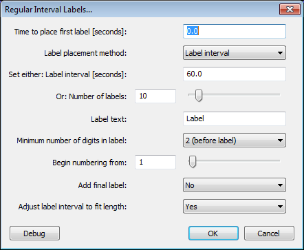

Regular Interval Labels
From Audacity Manual
You can either choose the number of labels to be created or the interval between them. Each label produced can contain specified label text and the labels can be given sequential numbers before or after the text.
- Accessed by:
- 
Time to place first label
The time in seconds where the first label will be placed, measured from the start of the selection. The default setting is 0.0 which means that the first label will be placed exactly at the beginning of the selected audio. Setting the first label after the start of the selection lets you either exclude the audio before that label, or include a custom-length segment of audio before the regularly spaced segments, according to whether you "include audio before first label" at Export Multiple.
Label placement method
To place labels within the selection a chosen distance apart, select Label interval  here then enter that distance in Label interval [seconds] (the input box directly below).
here then enter that distance in Label interval [seconds] (the input box directly below).
To create a chosen number of labels within the selection, select Number of labels  here then enter the desired number of labels in Number of labels (the input box below Label interval [seconds] ).
here then enter the desired number of labels in Number of labels (the input box below Label interval [seconds] ).
Set either: Label interval
If you have selected Label interval then the labels will be placed at your specified interval within the selected audio. The default interval is 60 seconds. This can be changed to any positive number of seconds by typing in the text input box. Fractions of seconds can be entered.
Or: Number of labels
If you have selected Number of labels then your specified number of labels (default is 10) will be created. The number can be changed by typing in the input box or by moving the slider. The slider enables you to create between 2 and 100 labels but a larger number of labels may be specified by typing in the box.
Label text
The text that will be included in each label. The default setting is Label but this can be replaced by any text (or no text) by using the input box.
Minimum number of digits in label
Choose the minimum number of number of digits in the label numbers and whether the number is placed before or after the label text. The default setting is 2(before label)  . With that setting, if you had 10 labels with "Label" as the label text, the first label would be "01Label", the next "02Label" and the last would be "10Label".
. With that setting, if you had 10 labels with "Label" as the label text, the first label would be "01Label", the next "02Label" and the last would be "10Label".
If you select None - text only  then no numbering will be applied to the labels. If you choose this and set no label text then you will produce a set of empty labels.
then no numbering will be applied to the labels. If you choose this and set no label text then you will produce a set of empty labels.
Begin numbering from
If a minimum number of digits has been chosen in the control above, enter the number from which the sequential numbering will start. The default value of 1 can be changed by typing in the input box or by moving the slider. The slider enables you to enter a number between 0 and 100 but you can enter any whole number in the box - positive, negative or 0.
Add final label
Choose whether to place an extra label at the end of the selected audio, which if Number of labels placement is chosen will produce one more label than the number chosen there. The default setting is No  .
.
Adding a final label is only useful if there is audio after the end of the selection. If choosing
Number of labels placement, selecting Yes  to add a final label will ensure that Export Multiple produces a final file starting at the end of the selection. If Label interval placement is chosen and the label interval is not an exact fraction of the selection, the final file will start before the end of the selection. To ensure that a final label always produces a file starting at the end of the selection, set Adjust label interval to fit length (below) to "Yes".
to add a final label will ensure that Export Multiple produces a final file starting at the end of the selection. If Label interval placement is chosen and the label interval is not an exact fraction of the selection, the final file will start before the end of the selection. To ensure that a final label always produces a file starting at the end of the selection, set Adjust label interval to fit length (below) to "Yes".
Adjust label interval to fit length
If you choose the default Label interval placement method, the default Yes  setting for this control adjusts your chosen label interval if necessary to make all the audio segments of equal length.
setting for this control adjusts your chosen label interval if necessary to make all the audio segments of equal length.
If you wish your chosen label interval to be respected even if this changes the length of the final audio segment, choose No  . Note that in order to ensure the correct number of segments is created, it is currently necessary to also set Add final label (see above) to "Yes".
. Note that in order to ensure the correct number of segments is created, it is currently necessary to also set Add final label (see above) to "Yes".